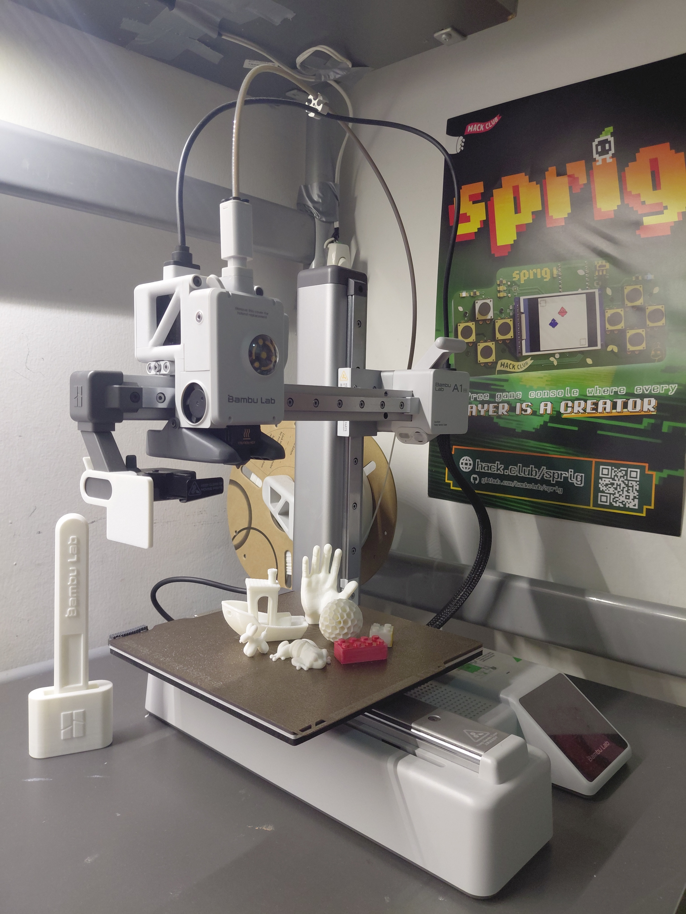
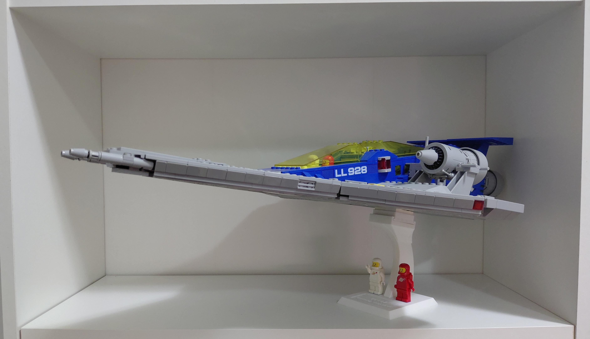
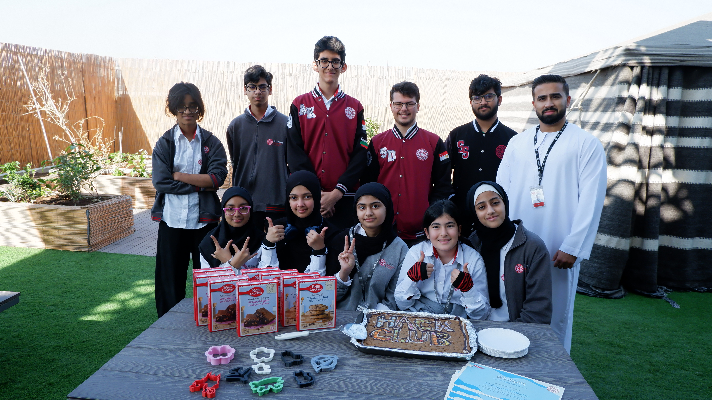
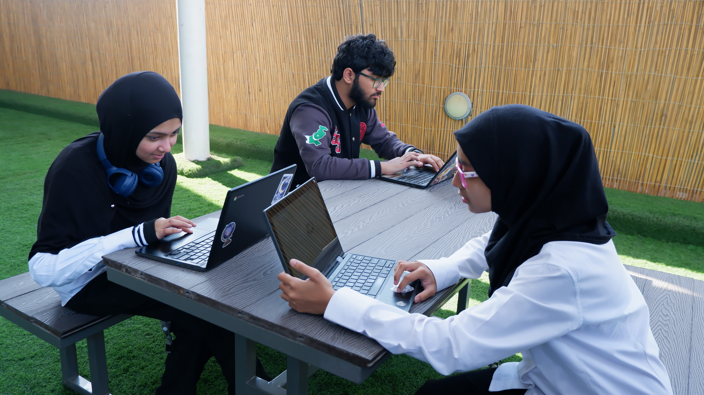

A little about me
https://whoisaly.com/
Hello! I'm Aly, a 17-year-old high school student based in Dubai. I enjoy working on silly projects (like this website).Some of my interests include:
- web & game development
- hardware & 3D CAD
- lego
- daydreaming
My recent 3D printing obsession
Last August, I got my first 3D printer (an a1 mini!!) from Hack Club's Summer of Making. I've wanted one for soooo long so this was honestly such a dream come true.I'm still learning how to use OnShape, but haven't had as much time as I'd like to sit down and create my own 3D models. I have, however, been printing some pretty cool things I find online.


One of my favourite prints so far has been this display stand for my LEGO ICONS 10497 Galaxy Explorer. I'm still shocked by how sturdy the print is, and also absolutely flabbergasted by the fact that it printed with 0 supports?!
Leading a Hack Club at my school
In January 2025, I established a Hack Club chapter at my school.We recently had our first workshop of the 2025/2026 academic year, where we guided our beloved hack clubbers through designing their own cookie cutters in OnShape. We then 3D printed their cutters, and celebrated with cookies using the grant Hack Club sent us for completing BakeBuild.




The students' reactions to getting their cutters and cookies made it so worth it. :)
Managing a team of 63 people
I'm currently serving as Chief of Staff for the 5th edition of our school's annual Model United National Conference, ASCSMUN'26.In case you're wondering, Model UN is a simulation where students effectively role-play as delegates of UN committees, debate international issues, and work toward drafting and passing resolutions by the end of the three-day conference. Last year’s ASCSMUN conference welcomed ~550-600 delegates from schools across the UAE.
One of my biggest responsibilites as Chief is training our Chairs & Pagers (63 in total) on the MUN rules of procedure to ensure a smooth conference.
 
